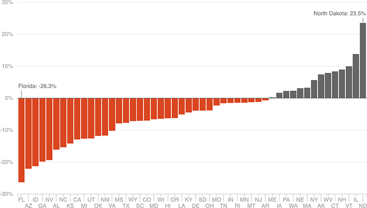

State And Local School Funding Has Declined In Most States Since 2008
An analysis from the Center on Budget and Policy Priorities found that, adjusting for inflation, state and local spending per pupil declined in 36 states between 2008 and 2014.
